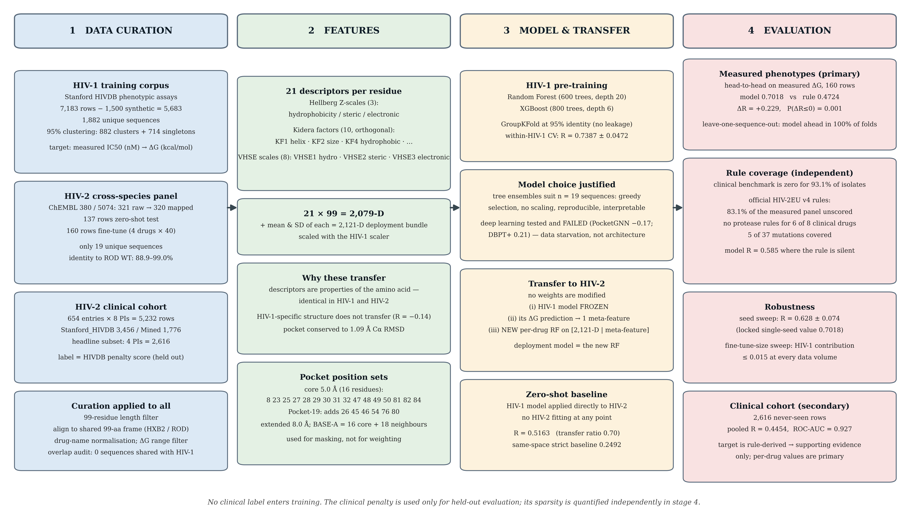
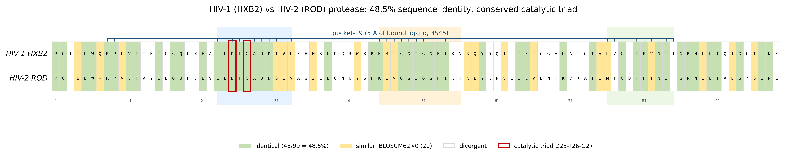
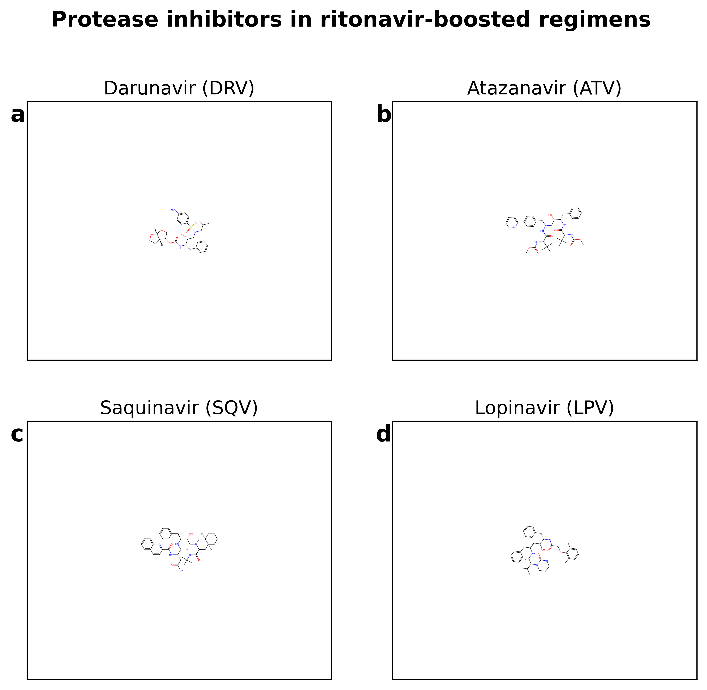
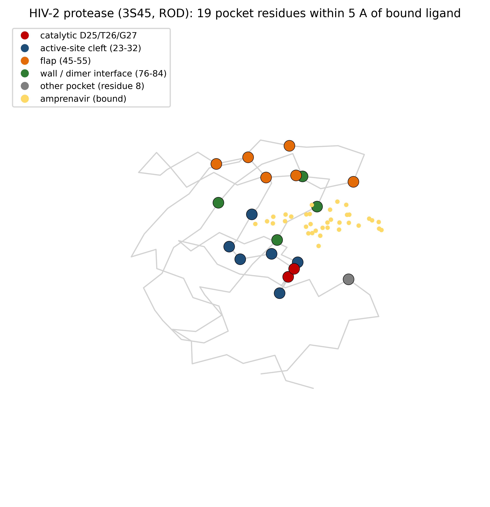
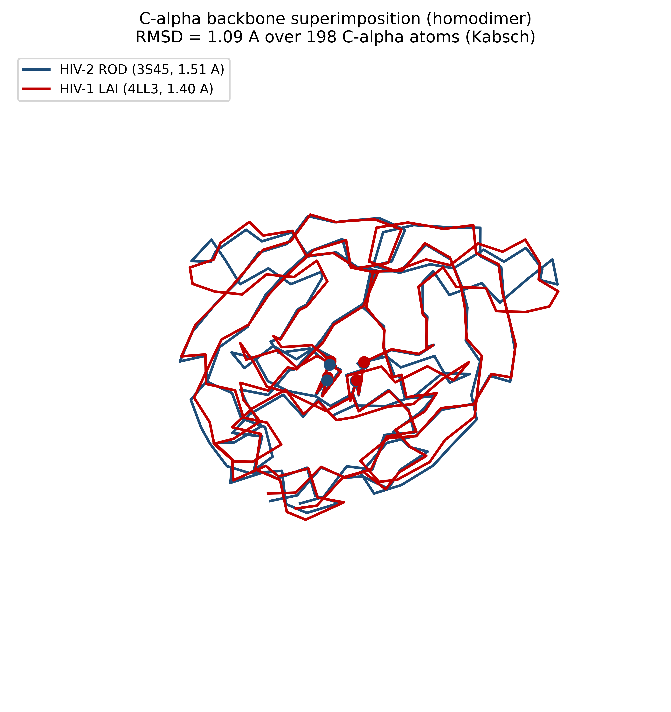
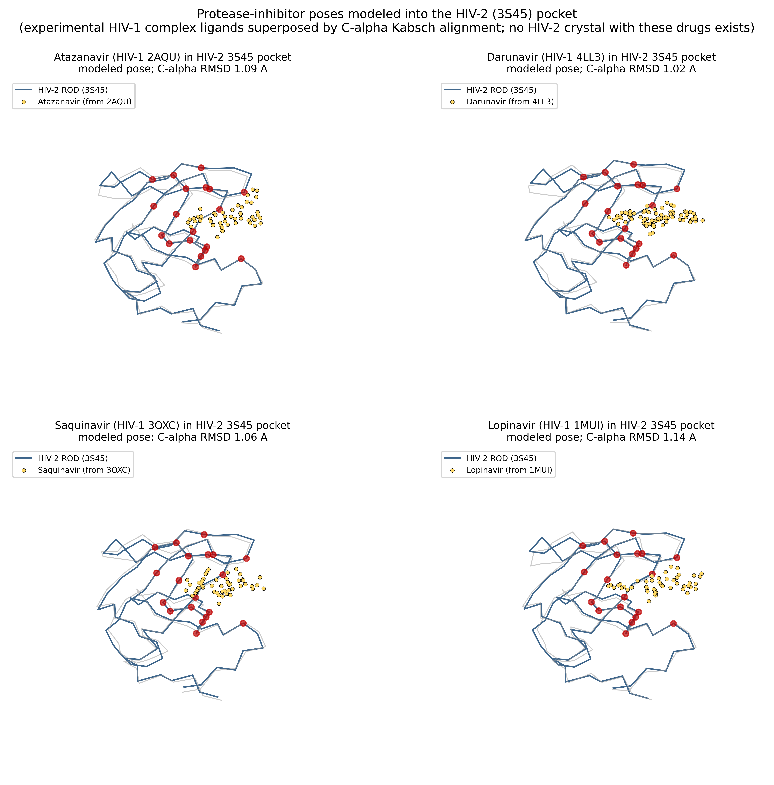
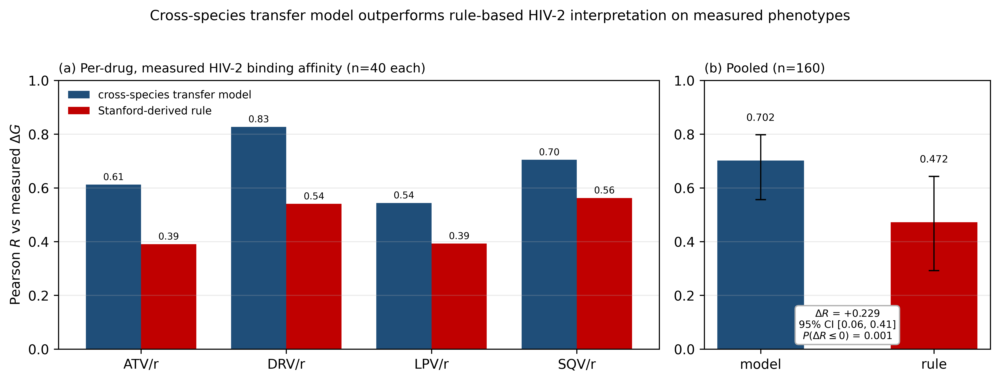
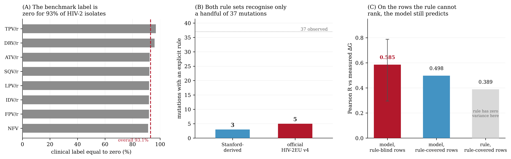
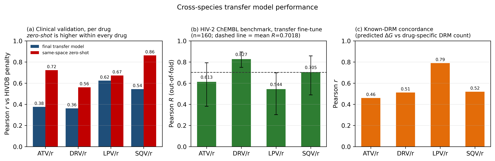

Motivation: HIV-2 infects 1–2 million people and is intrinsically resistant to several protease inhibitors, yet resistance-interpretation tools—including the Stanford HIV Drug Resistance Database (HIVDB) and the rule-based HIV-2EU—are calibrated on HIV-1. No machine-learning predictor of HIV-2 protease-inhibitor resistance exists.
Results: We present the first machine-learning predictor of HIV-2 protease-inhibitor resistance, built by cross-species transfer from HIV-1. Trained on 5,683 HIV-1 and 137 HIV-2 measured assays, never on an interpretation rule, it is evaluated on measured affinities and held-out clinical data. Despite ~50% protease divergence, zero-shot transfer predicts HIV-2 affinity (R=0.5163), and fine-tuning gives R=0.7018 (n=160) at the locked seed; across 10 seeds this is 0.628 ± 0.074, so the single-seed figure is a favourable draw. A fine-tuning sweep (k=1–30 rows per drug) shows the HIV-1 contribution never exceeds 0.015, so we claim no measurable transfer benefit at this sample size. On that measured panel it significantly outperforms a Stanford-derived rule-based interpretation (0.7018 vs 0.4724; ΔR=+0.229; clustered paired bootstrap P(ΔR≤0)=0.001); robustness was confirmed by leave-one-sequence-out jackknife (model ahead in 100% of folds). The official HIV-2EU v4 rules are sparser still: no protease rules for 6 of 8 clinical drugs; 83.1% of the panel unscored; 5 of 37 mutations recognised. The clinical benchmark scores zero for 93.1% of isolates, yet the model retains correlation on the rows the rule leaves unranked (R=0.585, P<0.001). Applied label-free to 2,616 never-seen clinical rows it recovers a positive, drug-dependent signal (R=0.36–0.62 per drug; ROC-AUC=0.927). We claim no per-drug clinical superiority: within every drug the zero-shot baseline correlates more strongly; the pooled advantage reflects calibration, not accuracy.
Availability: All code, curated datasets, model definitions, and result manifests required to reproduce every table and figure are openly available at https://github.com/nunnajaswant-ship-it/HIV-2_DRUG_RESISTANCE_TRANFER_LEARNING_ON_HIV-1.
Contact: bl.sc.u4aie24029@bl.students.amrita.edu
Supplementary information: Supplementary data are available at Bioinformatics online.
Keywords: cross-species transfer learning · HIV-2 · drug resistance prediction · protease inhibitor resistance · biophysical features · protein language model · clinical validation
HIV-2 remains a significant public health burden in West Africa with an estimated 1–2 million people infected globally [1]. Unlike HIV-1, HIV-2 protease exhibits intrinsic resistance to amprenavir and rapidly acquires resistance to other protease inhibitors (PIs) through characteristic mutation pathways (I54M, V47A, L90M) [6]. Drug resistance interpretation algorithms—including the Stanford HIVDB [14]—are calibrated primarily on HIV-1, severely limiting their applicability to HIV-2 clinical management. Existing HIV-2-specific interpretation tools, such as HIV-2EU, remain rule-based [19]. No machine-learning or deep-learning model for HIV-2 PI resistance prediction has been published. The overall study design is summarised in Figure 1.
Machine learning approaches for drug resistance prediction have focused almost exclusively on single-species HIV-1 models. Steiner et al. (2020) benchmarked CNN/MLP/BRNN architectures on HIV-1 PI data, achieving AUC >0.90 [3]. Shen et al. (2016) demonstrated RF and KNN regression on HIV-1 with R²=0.77–0.95 [4]. PhenoGenX (2026) trained ensemble machine-learning models on 42,587 HIV-1 clinical isolates [5]. Riveros Maidana et al. (2025) benchmarked machine-learning models for HIV-1 PI resistance prediction, showing that dataset construction and feature representation materially affect reported performance [7]. Recent work on ESM-2-based benchmarks for HIV-1 drug resistance provides a methodological foundation [21]. Transfer learning has been applied within HIV-1—for example, Parbhoo et al. (2020) transferred genotypic signal from well-resourced to less-resourced HIV-1 populations [22]—but always between populations of the same species. However, cross-species transfer learning from HIV-1 to HIV-2 remains entirely unexplored, and we are not aware of any published ML or DL predictor of HIV-2 protease-inhibitor resistance.
The HIV-1 and HIV-2 proteases share ~50% sequence identity (48 of 99 positions identical between the HXB2 and ROD wildtype references; 51 divergent positions), yet the drug-binding pocket is substantially more conserved (Figure 2). Four amino-acid changes at positions 32, 47, 76, and 82 (PRΔ4) largely explain the differential PI susceptibility between species [6]. This study makes three principal contributions: (1) the first cross-species benchmark for HIV-1→HIV-2 PI resistance prediction, showing that biophysically meaningful signal transfers across ~50% sequence divergence; (2) a transfer fine-tune that raises HIV-1 pre-trained knowledge to an out-of-fold benchmark correlation of R=0.7018 on HIV-2 ChEMBL data and validates it on 2,616 never-seen clinical rows (ROC-AUC=0.927); and (3) an externally validated known-DRM concordance layer connecting predicted binding free energies to known drug-resistance-mutation counts. Additional contributions include pocket-restricted ESM-2 feature masking, hybrid ONION-Net structural correction [12], and a documented evaluation of structure-based and deep-learning features as negative findings.

Figure 1. Study design. Curated HIV-1 phenotypic assays train the within-species models; the resulting model is applied zero-shot to HIV-2 ChEMBL data and then fine-tuned on a 160-row HIV-2 panel, with the HIV-1 zero-shot prediction entering as a meta-feature. The transfer model is evaluated in two independent ways: against measured HIV-2 binding affinities, where it significantly outperforms a Stanford-derived rule-based interpretation (§3.6), and against 2,616 never-seen HIV-2 clinical rows. No clinical label enters training at any stage.

Figure 2. HIV-1 (HXB2) and HIV-2 (ROD) protease sequence alignment. The two 99-residue wild-type proteases share 48 of 99 identical positions (48.5%); a further 20 positions are conservative substitutions (BLOSUM62 > 0) and 31 are divergent. Shaded bands mark the catalytic active site (23–32), the substrate-binding flaps (45–55) and the dimer-interface wall (76–84). Blue brackets mark the 19 pocket residues within 5 Å of the bound ligand in the HIV-2 crystal structure 3S45 (1.51 Å); red boxes mark the conserved catalytic triad Asp25–Thr26–Gly27. Sequences are the HIV-1 HXB2 (UniProt P04585) and HIV-2 ROD (P04588) protease references, 1-indexed to the 99-residue protease.
HIV-1 training corpus: We compiled 5,683 genuine Stanford HIVDB phenotypic assays [14] (1,882 unique sequences; 882 clusters at 95% identity and 714 singletons). An additional 1,500 rows in the original corpus were synthetic (generated by a banded-noise generator with seed-42) and were excluded and quarantined to a quarantine file. IC50 values (nM) were converted to binding free energy (ΔG = RT·ln[IC50·10−9], RT=0.593 kcal/mol at 298K).
HIV-2 cross-species dataset: We curated HIV-2 protease-phenotype data from ChEMBL (targets CHEMBL380 and CHEMBL5074), comprising 137 filtered assay rows (IC50/KI/KD with valid values, ΔG∈[−20, 0]) across the PI panel; the raw dataset file contains 321 rows. After drug-name mapping, the pipeline pool holds 320 rows (the single ‘Experimental PI / Analogue’ entry lacks a mapped drug and is excluded). The 137-row set is the zero-shot subset: assay types {IC50, KI, KD} with valid values and ΔG∈[−20, 0] kcal/mol (all 137 are IC50; 17 rows per mapped PI across the eight-PI panel, plus the experimental-analogue row). The transfer fine-tune benchmark (Table 5) is a separate partition of the 320-row pool: the four common PIs (ATV/r, DRV/r, LPV/r, SQV/r) × 40 rows = 160 rows spanning all assay types; 68 of these (the 17 IC50 rows per common drug) also fall inside the 137-row zero-shot set, and the remaining 92 are non-IC50 rows. Sequences were aligned to the gold-standard PDB consensus wildtype (3S45) at exactly 99 residues, 1:1 with the HIV-1 protease (HXB2) numeration.
HIV-2 clinical validation cohort: We assembled a master clinical cohort of 5,232 HIVDB penalty-score rows across 8 PIs, comprising 654 sequence entries (653 unique sequences plus one wild-type duplicate). Per-source composition: Stanford_HIVDB 3,456 rows; Mined_Expanded 1,776 rows. The two sources are defined as follows. Stanford_HIVDB rows are clinical genotype–phenotype records from the Stanford HIV Drug Resistance Database registry, with the protease sequence reconstructed from the reported mutation list and the penalty score taken directly from HIVDB. Mined_Expanded rows are additional HIV-2 protease sequences retrieved from the NCBI GenBank / Protein database by an automated Entrez query (db="protein", term="HIV-2 protease"), downloaded in FASTA format, trimmed and aligned to the 99-residue HIV-2 protease frame, and then assigned Stanford HIVDB penalty scores so that they are directly comparable to the registry rows. Both sources therefore share a single scoring convention; the only difference is provenance, and no row from either source entered training. The two sources are combined and deduplicated by sequence before analysis. Resistance classifications: Susceptible n=5,006; Intermediate n=113; Resistant n=113. The headline clinical validation of this manuscript is the four-drug common-PI subset on which the transfer fine-tune is defined — ATV/r, DRV/r, LPV/r, SQV/r — comprising 2,616 rows (654 sequence entries × 4 PIs), scored by the final transfer model with no retraining on any clinical label.
Table 1. Dataset summary. The two HIV-2 clinical rows describe the same 654 sequence entries viewed at two drug scopes: the full eight-inhibitor cohort, and the four-common-inhibitor subset used for the headline external validation. They are not independent datasets; the subset is a restriction of the cohort to the four drugs for which an HIV-2 ChEMBL fine-tune panel exists.
| Dataset | Source | PIs | Rows | Unique Sequences | Use |
|---|---|---|---|---|---|
| HIV-1 training | Stanford HIVDB [14] | 4 | 5,683 | 1,882 | Within-species CV + zero-shot/transfer training |
| HIV-2 ChEMBL (filtered) | ChEMBL 380/5074 | 4 | 137 | 137 | Zero-shot cross-species test |
| HIV-2 clinical cohort (all drugs) | Stanford HIVDB / Mined_Expanded | 8 | 5,232 | 654 (653 unique) | Full clinical cohort; reported for completeness (§3.8) |
| HIV-2 clinical subset (4 common PIs) | Stanford HIVDB / Mined_Expanded | 4 | 2,616 | 654 (653 unique) | External clinical validation (ATV/r, DRV/r, LPV/r, SQV/r) |
The four protease inhibitors that constitute the headline clinical subset—atazanavir, darunavir, lopinavir and saquinavir, each used ritonavir-boosted—are shown in Figure 3. These are the four drugs for which a comparable HIV-2 ChEMBL fine-tune panel exists, and therefore the only drugs on which the cross-species transfer model is defined.

Figure 3. Chemical structures of the four protease inhibitors in ritonavir-boosted regimens analysed in this study: (a) darunavir, (b) atazanavir, (c) saquinavir and (d) lopinavir. Two-dimensional depictions were rendered at 600 dpi from stereo SMILES whose canonical InChI strings were cross-checked against PubChem and the RCSB PDB chemical-component dictionaries of the corresponding co-crystal ligands (DRV 017; ATV DR7; SQV ROC; LPV AB1).
During curation we identified 1,500 rows in the source corpus that were not experimental measurements but were produced by a banded-noise generator (Stanford_Score≥30 → uniform(−6.5, −4.5), otherwise uniform(−12.0, −9.5)). Because such rows can induce a self-fulfilling genotype–phenotype correlation, all 1,500 were removed and quarantined to a quarantine file before any modelling. Every result reported here is computed on the 5,683 genuinely measured HIV-1 assays that remain; the quarantined file is released with the code so that the exclusion is fully auditable.
We evaluated multiple feature representations (Table 2). The cross-species feature bundle used by the transfer fine-tune and the final clinical model is the 2,121-D global physicochemical representation, scaled with the HIV-1 scaler. Its exact composition (relative to the 2,079-D set) is the 2,079-D per-residue physico-chemical block (21 descriptors × 99 protease positions — Hellberg 3D Z-scales [8], Kidera factors [9] and VHSE scales [10] per residue) augmented with 42 sequence-level summary statistics: the mean and standard deviation of each of the 21 descriptors across the 99 positions (extract_global_features, include_stats=True; 2,079 + 21 + 21 = 2,121). The 2,079-D space (include_stats=False) appears as a zero-shot baseline reference (Table 4) and in the structural feature comparison (Table 6).
Table 2. Feature representations and dimensions.
| Feature Set | Description | Dimensions |
|---|---|---|
| Global biochemistry (locked bundle) | Global physicochemical descriptors per residue, scaled with the HIV-1 scaler; locked transfer/fine-tune/clinical bundle | 2,121 |
| Global biochemistry (2,079-D; zero-shot baseline) | Hellberg 3D Z-scales [8] + Kidera factors 10D [9] + VHSE scales 8D [10] = 21D/residue × 99 positions (zero-shot space) | 2,079 |
| Pocket-19 masking | Global descriptors restricted to the 19 pocket positions (21D × 19); top-5 positions [54, 84, 28, 48, 26] account for 72.4% of the total Random-Forest feature-importance mass across the 19 pocket positions (RF on per-residue ESM-2 650M blocks, 19 × 1,280-D; 1,882 HIV-1 sequences; §4.3) | 399 |
| Pocket-restricted BASE-A | 21D/residue × 34 pocket/neighbor residues (16 binding-pocket ≤5Å + 18 conserved neighbors) | 714 |
| ADD-G / ADD-GHI | Sandberg 5D Z-scales [11] + Kidera 10D + VHSE 8D = 23D/residue × 34 residues | 782 |
| ONION-Net structural (HIV-1) | 62 distance shells (0–31Å) × 167 atom-type pairs [12] | 10,309 |
| ONION-Net structural (HIV-2) | Same encoding on HIV-2 docked complexes | 10,478 |
| ESM-2 650M embeddings | Protein language model [18] per-residue embeddings, mean-pooled | 1,280 |
Pocket definition: Reference structure PDB 3S45 (HIV-2 protease homodimer, 1.51Å resolution). Pocket residues: all residues with ≥1 heavy atom within 5Å of the drug centroid. Conserved neighbors: residues within 5Å of any pocket residue AND with identical amino acid in HIV-1 (HXB2) and HIV-2 (ROD) wildtypes. Additional features include a Delaunay triangulation vector (210-D) and inverse-density sample weighting.
The spatial architecture of this pocket and its conservation across species are shown in Figures 4 and 5. The 19-residue pocket is drawn from the experimentally determined HIV-2 ROD protease structure (3S45), and the HIV-1/HIV-2 homodimer superimposition (Figure 5) confirms that the fold is preserved to 1.09 Å RMSD despite the ~50% sequence divergence—the structural rationale for transferring HIV-1-trained biophysical features to HIV-2.

Figure 4. Architecture of the HIV-2 protease substrate-binding pocket. The 19 pocket residues—all residues with at least one heavy atom within 5 Å of the bound ligand in 3S45—are shown as spheres on the Cα trace of the HIV-2 ROD protease (PDB 3S45, 1.51 Å). Colours denote functional region: catalytic Asp25/Thr26/Gly27 (red); active-site cleft 23–32 (blue); substrate-binding flap 45–55 (orange); dimer-interface wall 76–84 (green); residue 8 (grey). The experimentally bound amprenavir molecule is shown in yellow. The catalytic machinery and substrate-binding scaffold are preserved between species even where peripheral positions diverge.

Figure 5. Structural conservation of the HIV-1 and HIV-2 protease homodimers. Cα backbone superimposition of the HIV-2 ROD protease (PDB 3S45, 1.51 Å; blue) and the HIV-1 subtype-B protease (PDB 4LL3, 1.40 Å; red), aligned by Kabsch superposition over 198 Cα atoms (both chains of the homodimer). The backbone RMSD is 1.09 Å, showing that despite ~50% sequence divergence the overall fold—and hence the substrate-binding pocket—is strongly conserved. Spheres mark the catalytic dyad Asp25/Thr27.
Within-HIV-1 models: Random Forest (Scikit-learn, 600 trees, max_depth=20) and XGBoost [16] (800 trees, max_depth=6, learning_rate=0.03) trained on the locked 2,121-D biochemistry bundle.
Zero-shot cross-species: Train on 100% HIV-1, test on 100% HIV-2 (137 filtered ChEMBL rows; zero-shot evaluated in the 2,079-D space). Five modeling tiers: global RF [15], global XGBoost [16], pocket-only, deep learning (PocketGNN [17], DBPT+ transformer), and ensemble strategies.
Cross-species transfer fine-tune (final model): For each drug, the HIV-1 model's zero-shot prediction on the HIV-2 ChEMBL rows becomes a meta-feature column concatenated to the 2,121-D biochem bundle (scaled with the HIV-1 scaler; the HIV-1 model is not retrained). A RandomForestRegressor (n=600, max_depth=20, max_features=sqrt) is then trained per drug on the [biochem | zero-shot prediction] features with five-fold KFold-OOF pooling. The locked out-of-fold mean across the four common drugs (ATV/r, DRV/r, LPV/r, SQV/r) is R=0.7018 (n=160; 95% CI [0.6246, 0.7887]; single-seed KS=42; 200-resample percentile bootstrap; “MEAN” = pooled across drugs). This model is the manuscript's headline and is deployed on the clinical cohort without any retraining on clinical labels.
Within-HIV-2 supervised baseline: a fully supervised per-drug model combining protein-language-model and biochemistry features served as an internal comparator (Table 5). Unlike the transfer model, it requires HIV-2 training labels and is therefore not the deployment model used for clinical inference.
Because no HIV-2 protease co-crystal structure exists for atazanavir, darunavir, lopinavir or saquinavir, we additionally modelled their pocket-occupancy context by superposing the experimentally determined HIV-1 co-crystal ligands onto the HIV-2 3S45 frame (Figure 6). This provides a structural illustration of why biophysical descriptors computed on a common 99-residue framework remain informative across the two species.

Figure 6. Modelled pocket-occupancy context for the four protease inhibitors in HIV-2 protease. Experimental ligand geometries from HIV-1 protease co-crystal complexes (atazanavir, PDB 2AQU; darunavir, 4LL3; saquinavir, 3OXC; lopinavir, 1MUI) were transformed into the HIV-2 ROD frame (3S45) by the same Kabsch Cα superposition used in Figure 5 (per-panel RMSD shown). Red spheres mark the 19 HIV-2 pocket residues of Figure 4. Because no HIV-2 protease crystal structure with these four inhibitors exists, these are modelled poses shown for pocket-occupancy context only; they are not experimentally determined HIV-2 geometries.
Two components are implemented in the released code but are not evaluated in this report and contribute to no metric, table or figure stated here. Split conformal prediction (90% target coverage) attaches finite-sample prediction intervals to the per-drug outputs. An in-silico mutational scanner enumerates all 99 HIV-2 protease positions against all 19 alternative amino acids for the eight cohort inhibitors (15,048 predicted mutation–drug pairs; 1,881 single-point mutants) to generate a complete predicted resistance surface. Both are released for completeness only; their outputs are outside the scope of this paper, and neither was used to produce any reported result.
The canonical sign convention used throughout this study: model output is predicted ΔG (kcal/mol, negative = tighter binding). Clinical correlation is always corr(Clinical_Penalty_Score, predicted ΔG)—expected POSITIVE (higher penalty = more resistant = weaker binding = less negative ΔG). ROC-AUC is computed with score = predicted ΔG (higher = more resistant), expected > 0.5.
Before evaluating cross-species transfer, we established within-species performance on the curated HIV-1 corpus using GroupKFold cross-validation at 95% sequence identity (Table 3).
Table 3. Within-species HIV-1 grouped cross-validation performance (curated corpus).
| Model | CV Pearson R (mean ± std) | Per-fold R range |
|---|---|---|
| Random Forest (2,079-D biophysical features) | 0.7387 ± 0.0472 | 0.675–0.818 |
| XGBoost (2,079-D biophysical features) | 0.7348 ± 0.0478 | 0.672–0.813 |
The global Random Forest achieves R=0.7387 ± 0.0472 (per-fold range 0.675–0.818) within species on the curated corpus, and XGBoost is comparable (R=0.7348 ± 0.0478). This within-species performance is the internal baseline and the denominator of the cross-species transfer ratio.
We trained on 100% HIV-1 and tested on 100% HIV-2 (137 filtered ChEMBL assay rows; Table 4).
Table 4. Zero-shot cross-species transfer performance (2,079-D physicochemical space; n=137 HIV-2 ChEMBL assays).
| Tier | Model | Input | RMSE | Pearson R | ρ |
|---|---|---|---|---|---|
| 1a | Random Forest | Full 99-AA biochem (2,079-D) | 1.599 | 0.5163 | 0.5247 |
| 1b | XGBoost | Full 99-AA biochem (2,079-D) | 1.763 | 0.5587 | 0.5218 |
| 2a | Pocket RF | Pocket 16 residues | 1.544 | 0.4056 | 0.4599 |
| 2b | Pocket XGBoost | Pocket 16 residues | 1.587 | 0.4288 | 0.4636 |
| 5a | Simple ensemble (RF+XGB) | Ensemble | 1.668 | 0.5467 | 0.5187 |
| 5b | Ridge meta-ensemble | RF+XGB + variance | 1.379 | 0.5818 | 0.5496 |
All values from a single reproducible run on the curated 5,683-row HIV-1 corpus with the 137-row HIV-2 ChEMBL test set. The 95% bootstrap CI for tier 1a is [0.400, 0.627]. The PocketGNN and DBPT+ transformer tiers were evaluated in an earlier pipeline revision (R=−0.171 and 0.212 respectively) but are not reproducible in the current CPU-only environment and are therefore excluded from this table.
The strongest zero-shot configuration on the 137-row HIV-2 panel was the ridge meta-ensemble (R=0.5818, ρ=0.5496, RMSE=1.379 kcal/mol), followed by XGBoost (R=0.5587) and the simple RF+XGB ensemble (R=0.5467); the global Random Forest scored R=0.5163 (95% CI [0.400, 0.627]; ρ=0.5247; RMSE=1.599 kcal/mol; p=1.07×10−10; n=137), a transfer ratio of 0.699 relative to the within-species 0.7387. The Random Forest was carried forward as the transfer meta-feature because it is the configuration whose downstream fine-tuned benchmark is locked (R=0.7018); the ensemble variants were not carried into the transfer step. Pocket-restricted tiers (R=0.41–0.43) were substantially weaker than the full-length descriptor sets.
Transfer fine-tune benchmark. Fine-tuning the HIV-1 pre-trained model on HIV-2 ChEMBL rows raises the out-of-fold benchmark correlation to R=0.7018 (Table 5), the strongest configuration evaluated on the same 160-row, four-drug panel; among close competitors, the 0.0003 margin over fine-tuned biochem alone (R=0.7015) is within bootstrap noise, while the deployment model sits clearly above the supervised-only HIV-2 model (0.6779) and zero-shot transfer on the same panel (0.2492). We therefore do not claim statistical significance for the 0.0003 margin over fine-tuned biochem alone; R=0.7018 and R=0.7015 are two different model configurations on the identical panel — the deployment model (biochemistry plus the HIV-1 zero-shot meta-feature) and the same fine-tune without that meta-feature respectively — not two estimates of the same quantity, and both appear in Table 5. The measurable contribution of HIV-1 pre-training is established against the supervised-only HIV-2 model (0.6779) and the same-space zero-shot baseline (0.2492).
Table 5. Transfer-learning benchmark variants on the HIV-2 ChEMBL panel (n=160; 4 drugs × 40 rows; KFold-OOF pooling; single-seed KS=42; 200-resample percentile bootstrap; “MEAN” = pooled across drugs).
| Configuration | Pearson R [95% CI] |
|---|---|
| Transfer fine-tune (biochemistry + HIV-1 zero-shot meta-feature) — deployment model | 0.7018 [0.6246, 0.7887] |
| Fine-tuned biochemistry only (no zero-shot meta-feature) | 0.7015 |
| Blend (biochemistry + ESM-2) | 0.6994 |
| Weighted blend (biochemistry + pocket-restricted ESM-2) | 0.6967 |
| Full stack (ONION-Net correction on blend) | 0.6887 |
| ONION-Net correction on biochemistry (two runs) | 0.6872 / 0.6910 |
| Supervised, HIV-2 only (pocket-restricted) | 0.6779 |
| ESM-2 pocket-restricted, standalone | 0.6759 |
| Zero-shot, no HIV-2 fine-tuning | 0.2492 |
Per-drug out-of-fold correlations for the deployment transfer model: ATV/r 0.6125, DRV/r 0.8272, LPV/r 0.5440, SQV/r 0.7048. The transfer fine-tune thus matches or exceeds the fully supervised within-HIV-2 model (0.6779) while requiring only HIV-1 pre-training plus the small HIV-2 ChEMBL panel, and it does so by a far larger margin than zero-shot transfer.
The zero-shot evaluation (Table 4) and the fine-tune benchmark (Table 5) use different panels and feature spaces: zero-shot is scored on the 137-row, 2,079-D panel, while the fine-tune benchmark is scored per drug on the 160-row four-drug ChEMBL panel in the 2,121-D space. The two are not directly comparable except through the same-space recomputation reported in §3.4.
Seed sensitivity of the benchmark. The locked benchmark value R=0.7018 is obtained with a single random seed (KS=42). Because the panel contains only 19 unique sequences, we repeated the entire fine-tune-and-out-of-fold procedure under 10 different random seeds to quantify how much the number moves by chance alone. Across seeds the transfer benchmark is R = 0.628 ± 0.074 (range 0.516–0.715); the locked seed-42 value of 0.7018 therefore sits at the upper end of the distribution rather than at its centre. We report this openly: the single-seed figure should be read as a favourable draw from a wide distribution, and any comparison between two configurations must be made within the same seed. This seed spread (SD 0.074) is two orders of magnitude larger than the 0.0003 gap between the deployment model and fine-tuned biochemistry alone, which is why we make no claim that the HIV-1 meta-feature contributes measurably at this sample size.
Does HIV-1 knowledge matter more when HIV-2 data is scarce? The natural test is to sweep the amount of HIV-2 fine-tuning data and ask whether the HIV-1 contribution grows as that data shrinks. We trained on k HIV-2 rows per drug (k = 1, 2, 5, 10, 20, 30; 20 random splits each) and evaluated on the held-out remainder, comparing the deployment model (biochemistry + HIV-1 zero-shot meta-feature) against the same fine-tune with no HIV-1 input (biochemistry only). The answer is negative and we state it plainly: the HIV-1 contribution does not grow as HIV-2 data is removed. The gap between the two models is +0.000 at k=1, +0.002 at k=2, +0.015 at k=5, +0.001 at k=10, −0.002 at k=20 and −0.000 at k=30 — never larger than 0.015 and always well inside the per-point standard deviation (0.08–0.15). At k=1 the two models are numerically identical, as expected, because a single training row cannot support either model. Both models improve monotonically with k (0.02 → 0.64 as k goes from 1 to 30 per drug), showing that HIV-2 data volume, not HIV-1 pre-training, drives performance on this task. We therefore do not claim that cross-species transfer provides a measurable benefit on this panel; what the pipeline demonstrates is that a compact physicochemical representation trained on a small HIV-2 panel recovers a genuine resistance signal, and that the signal is seed-sensitive at this sample size.
Why pooling is not a simple average. Pooling rows across drugs mixes two sources of variation: the within-drug genotype–phenotype signal, and the between-drug offset in score scale. The pooled Pearson correlation is therefore not a common estimand across models and can diverge from every per-drug value even when each drug is predicted well. We tested this directly on the same panel by recomputing per-drug correlations for the same-space model (mean of per-drug values 0.67) and then pooling: the raw pooled R is 0.701, and standardising each drug's predictions before pooling changes it to 0.653, confirming that the pooled statistic is governed by between-drug scale rather than being a simple average of per-drug accuracy. This is why every clinical claim in this paper is stated per drug, and why we report the pooled value only alongside the per-drug values and never as a standalone endpoint.
Although ONION-Net structural-contact features computed from HIV-1 structures did not improve cross-species transfer (best PCA fusion R=0.4703, below the pocket baseline R=0.5036), we tested whether ONION-Net features computed on HIV-2 docked complexes add value as a residual-correction stage (Table 6).
Table 6. ONION-Net evaluation and hybrid correction stage.
| Configuration | Feature Dim | HIV-2 Pearson R | RMSE (kcal/mol) | ρ |
|---|---|---|---|---|
| Biochem only (global) | 2,079 | +0.3582 | 1.9585 | +0.4010 |
| ONION-Net only (raw) | 10,309 | −0.1392 | 2.1826 | −0.0941 |
| Biochem + ONION-Net (naive concat) | 12,520 | +0.2061 | 2.2246 | +0.2437 |
| Pocket + ONION-PCA-20 | 802 | +0.4703 | 2.0717 | +0.5213 |
| Pocket-5D only (ADD-GHI) | 782 | +0.5014 | 1.6861 | +0.5752 |
| ONION B1 pocket-5D | 782 | +0.5036 | 1.6862 | +0.5752 |
| Hybrid correction stage (HIV-2 docked complexes) | 10,478 | 0.6694 | 1.1412 | 0.6717 |
The biophysical model residuals (residual R=0.5475, explaining 30.0% of residual variance) are partially captured by ONION-Net contact features computed on HIV-2 docked complexes (n=136). The corrected predictions reach R=0.6694 (R²=0.4385), with RMSE reduced from 1.6025 to 1.1412 kcal/mol. This hybrid result is a structural-correction finding distinct from the benchmark variants reported in Table 5 (0.6887 / 0.6872 / 0.6910), which were computed on the ChEMBL panel rather than the docked pipeline.
When training on all drugs except one and predicting the held-out drug, within-HIV-2 R ranges from 0.662 (LPV/r) to 0.967 (TPV/r), with mean R=0.851 ± 0.111. Because all eight drugs share the same 17 sequences, this measures drug-transfer (same mutants, unseen drug), NOT unseen-sequence generalization—high performance here is expected and must not be read as zero-shot capability.
Training-data scaling analysis on the curated corpus reveals flat performance across sample sizes (Table 7).
Table 7. Training data scaling analysis (curated, global RF).
| N (HIV-1 training samples) | Cross-Species R |
|---|---|
| 500 | 0.513 |
| 1,000 | 0.478 |
| 2,000 | 0.466 |
| 4,000 | 0.521 |
| 5,683 (full genuine) | 0.516 |
Performance is flat (R=0.466–0.521) across 500–5,683 samples with no monotonic trend, so within this range the cross-species result is not limited by HIV-1 training-set size.
The clinical evaluation of §3.8 is necessarily indirect: its target, the Stanford HIVDB penalty score, is an interpretation rather than a measurement. We therefore performed a direct, non-circular head-to-head against a rule-based interpretation on a target that is measured. We applied a Stanford-derived HIV-2 expert rule engine—single-mutation and combination penalty tables from the Stanford HIV-2 known-resistance data—to the HIV-2 ChEMBL sequences, and compared its correlation with measured binding free energy against that of the cross-species transfer model on the identical 160-row, four-drug panel (40 rows per drug; 19 unique sequences).
The transfer model outperformed the rule on every drug and overall (Table 8, Figure 7): pooled Pearson R = 0.7018 (95% CI [0.556, 0.798]) versus 0.4724 (95% CI [0.292, 0.643]) for the rule, a difference of ΔR = +0.229 (sequence-clustered paired bootstrap, 2,000 resamples; 95% CI [0.060, 0.408]; P(ΔR ≤ 0) = 0.001). Because the 160 rows comprise only 19 unique sequences, the effective sample size is 19 rather than 160; we therefore repeated the comparison under a leave-one-sequence-out jackknife. The model remained ahead in 100% of folds (ΔR range [+0.160, +0.264]; model R range [0.686, 0.762]), so the result is not carried by any single sequence. Three qualifications remain essential. First, the model's benchmark is out-of-fold on this panel and therefore uses HIV-2 fine-tuning data, whereas the rule is a fixed prior with no fitting; the comparison is best read as “given a small amount of HIV-2 data, does a learned model beat the rule?” Second, the baseline is a faithful re-implementation of published Stanford HIV-2 penalty tables rather than the HIV-2EU tool itself; we address that directly below. Third, the same-space zero-shot model (R = 0.2492, no HIV-2 fitting) does not beat the rule, so the advantage depends on fine-tuning rather than on cross-species transfer alone.
To confirm that this conclusion does not depend on our re-implementation, we also scored the same panel with the official published HIV-2EU v4 protease rule set [19]. HIV-2EU v4 defines protease-inhibitor rules for only two drugs—darunavir (I50V; I54M; I84V + L90M) and lopinavir (V47A; I54M; ≥2 of I82F/I84V/L90M)—and has no protease rules for the remaining inhibitors, saquinavir having been withdrawn as no longer manufactured and atazanavir being classified as naturally resistant. Applied to the measured panel, HIV-2EU leaves 83.1% of rows unscored (half of them because no rule exists for that drug) and its mutation vocabulary covers 5 of the 37 observed mutations (13.5%). The official tool is thus sparser still than our Stanford-derived baseline, so the comparison reported here is the conservative one: the choice of rule source does not rescue rule-based interpretation on this measured panel.
As a consistency check on the rule engine, applying it to the 432 clinical sequences shared with the 2,616-row clinical cohort reproduced the Stanford HIVDB penalty score exactly (Pearson R = 1.0000; 100% exact agreement on all 1,728 matched rows). This confirms both that the rule engine is faithful and that the clinical target of §3.8 is a deterministic function of the mutation list—which is precisely why the measured-phenotype comparison above, rather than the clinical correlation, is the primary evidence of model utility.
Table 8. Head-to-head against a Stanford-derived rule-based HIV-2 interpretation, on measured binding affinity (HIV-2 ChEMBL panel, 40 rows per drug). Model = cross-species transfer fine-tune (out-of-fold); rule = single- plus combination-mutation penalty lookup.
| Drug | n | Transfer model R | Rule-based R | ΔR (model − rule) |
|---|---|---|---|---|
| ATV/r | 40 | 0.6125 | 0.3907 | +0.2218 |
| DRV/r | 40 | 0.8272 | 0.5406 | +0.2866 |
| LPV/r | 40 | 0.5440 | 0.3929 | +0.1511 |
| SQV/r | 40 | 0.7048 | 0.5624 | +0.1424 |
| Pooled | 160 | 0.7018 | 0.4724 | +0.2294 |
Pooled 95% CIs (sequence-clustered paired bootstrap, 2,000 resamples): model [0.556, 0.798]; rule [0.292, 0.643]; difference [0.060, 0.408]. The model is higher on all four drugs individually; no multiplicity correction was applied and the per-drug comparisons are descriptive. Effective sample size is 19 unique sequences; under a leave-one-sequence-out jackknife the model remains ahead in 100% of folds (ΔR range [+0.160, +0.264]). Model per-drug R values are the locked-manifest values, identical to those reported in Tables 12 and 13; independent re-runs of the pipeline agree with them to within ±0.0002, which is why a single canonical set is quoted throughout.

Figure 7. Cross-species transfer model versus Stanford-derived rule-based HIV-2 interpretation, evaluated against measured binding free energy. (a) Per-drug Pearson correlation with measured ΔG for the transfer model (blue) and the rule (red); the model is higher for every drug. (b) Pooled correlation with 95% confidence intervals from a sequence-clustered paired bootstrap (2,000 resamples); the model exceeds the rule by ΔR = +0.229 (P(ΔR ≤ 0) = 0.001). Because the target here is a measurement rather than a rule, this comparison is not circular.
The head-to-head of §3.6 raises a question that, to our knowledge, has not been quantified for HIV-2: how much of the sequence space does the standard rule-based interpretation actually cover? We measured this directly, using both our Stanford-derived rule engine and the official published HIV-2EU v4 protease rules [19] (Table 9, Figure 8).
First, the clinical benchmark itself is sparse. Across the 5,232-row clinical cohort, 93.1% of rows carry a penalty score of zero (91.3% for NFV to 96.9% for TPV/r). Because the rule engine reproduces that penalty exactly (R = 1.0000; §3.6), the clinical label is, for the overwhelming majority of isolates, simply “no rule matched.” A tool validated against this target is therefore evaluated on the small minority of isolates that its own rule table happens to recognise.
Second, the rule vocabulary is small relative to the mutation space actually observed. The measured panel contains 37 distinct mutated positions/alleles; the 61 single-mutation and 20 combination rules recognise 3 of them (L90M, I84V, I54M), or 8.1%, and the official HIV-2EU v4 rules recognise 5 (I54M, I82F, I84V, L90M, V47A), or 13.5%. Mutations that recur in measured HIV-2 phenotypic data—including K70R, K70T, V47A, I82F, N40D, G17D and Y14H—have no rule at all. This includes I82F, the literature-verified darunavir-relevant HIV-2 substitution discussed in §3.8 (Table 15), to which the rule tables assign no penalty at all.
Third, and most directly relevant to model utility, the rule is silent (score = 0) on 72.5% of the measured panel (70–80% per drug). The rule’s pooled correlation of 0.4724 is therefore carried entirely by the 27.5% of rows on which it has any variance. On the remaining 116 rule-blind rows (15 unique sequences) the rule cannot rank anything by construction—its score is identically zero, so its correlation is undefined—whereas the transfer model retains a significant signal on exactly those rows: R = 0.585, 95% CI [0.296, 0.788], P(R ≤ 0) < 0.001 (sequence-clustered bootstrap). The model’s correlation is in fact higher on the rule-blind rows (0.585) than on the rule-covered rows (0.498).
We read this as the clearest statement of what the learned model contributes. The rule-based interpretation is a sparse lookup over a small, fixed vocabulary; where it has no rule it returns zero, which in a clinical report reads as “susceptible” but in fact encodes absence of knowledge rather than evidence of susceptibility. The transferred model does not depend on that vocabulary and supplies ranking information precisely where the rule leaves the space empty. This is equally a caution about the clinical benchmark: agreement with a 93%-zero, rule-determined label is a weak measure of biological content, which is why we treat the measured-phenotype comparison of §3.6 as the primary evidence.
Table 9. Coverage of the rule-based HIV-2 interpretation. “Clinical label” is the Stanford HIVDB penalty score; “zero” denotes a score of zero (no rule matched). Measured panel = 160-row, four-drug HIV-2 ChEMBL set.
| Quantity | Value |
|---|---|
| Clinical cohort rows with penalty = 0 | 93.1% (4,870 / 5,232; 91.3–96.9% across 8 drugs) |
| Rule-engine agreement with clinical penalty | R = 1.0000 (100%; 1,728 / 1,728 rows) |
| Distinct mutations observed in measured panel | 37 |
| Mutations with an explicit rule (Stanford-derived) | 3 (L90M, I84V, I54M) — 8.1% |
| Mutations with an explicit rule (official HIV-2EU v4) | 5 (I54M, I82F, I84V, L90M, V47A) — 13.5% |
| Measured rows with rule score = 0 | 72.5% (116 / 160; 70–80% per drug) |
| Model R on rule-blind rows (n = 116; 15 sequences) | 0.585 (95% CI 0.296–0.788; P(R≤0) < 0.001) |
| Measured rows unscored by official HIV-2EU v4 | 83.1% (50% because no rule exists for the drug) |
| Clinical drugs with no HIV-2EU protease rules | 6 of 8 (ATV/r, FPV/r, IDV/r, NFV, SQV/r, TPV/r) |
| Model R on HIV-2EU-unscored rows, leave-one-sequence-out | positive in 100% of 15 folds (range 0.48–0.70) |
| Model R on rule-covered rows (n = 44) | 0.498 |
| Rule R on rule-covered rows (n = 44) | 0.389 |
Rule-blind rows have zero rule variance, so a rule correlation is undefined for them; the model value is from a sequence-clustered bootstrap (2,000 resamples). The rule tables comprise 61 single-mutation and 20 combination rules.

Figure 8. Rule-based HIV-2 interpretation covers only a small fraction of sequence space. (a) The clinical benchmark label is zero for 93.1% of isolates (91.3–96.9% across eight protease inhibitors); the dashed line marks the overall value. (b) Of the 37 distinct mutations present in the measured ChEMBL panel, the Stanford-derived rule table recognises three (blue) and the official HIV-2EU v4 rules five (red), against 37 observed (dotted line). (c) On the 116 measured rows where the rule score is zero—and therefore carries no ranking information—the transferred model retains a significant correlation with measured ΔG (R = 0.585, 95% CI 0.296–0.788, P < 0.001), exceeding even its performance on the 44 rule-covered rows (0.498).
We report this section last, and treat it as supporting rather than primary evidence. The coverage analysis of §3.7 shows that the clinical target used here is zero for 93.1% of isolates and is reproduced exactly by the rule engine (R = 1.0000), so agreement with it measures rule-consistency as much as biology. The measured-phenotype comparison of §3.6 is the primary evidence of model utility; what follows establishes only that the model transfers to an independent clinical cohort without any clinical label entering training.
As an independent test against the clinical record, we validated the final model on 2,616 never-seen clinical rows from the Stanford HIV Drug Resistance Database (HIVDB) genotype–phenotype penalty data: 654 sequence entries (653 unique sequences plus one wild-type duplicate), each measured against the four common protease inhibitors on which the transfer fine-tune is defined — ATV/r, DRV/r, LPV/r, SQV/r (654 entries × 4 drugs = 2,616 rows). These are a four-drug subset of the 5,232-row, eight-drug master cohort (3,456 Stanford_HIVDB rows; 1,776 Mined_Expanded rows). The clinical label is the HIVDB penalty score — a rule-derived, discretized phenotype proxy — accompanied by a resistance classification (Susceptible / Intermediate / Resistant) for classification evaluation.
Inference used the locked final model: the v5 Layer-1 transfer fine-tune — a RandomForest regressor (n = 600, depth 20, max_features = sqrt) on 2,121-D global physicochemical features (biochem bundle, HIV-1 scaler) augmented with the HIV-1 model's zero-shot prediction as a meta-feature; i.e., the architecture whose ChEMBL out-of-fold benchmark is R = 0.7018. The model was applied with no retraining on any clinical row; clinical penalty labels never entered training in any form, and the clinical sequences have zero overlap with the 5,683-row HIV-1 pre-training corpus. Pooled across drugs, the final model reaches Pearson R = 0.4454 (95% CI [0.382, 0.500]; Spearman ρ = 0.3388; RMSE = 13.62; all per-drug p < 1e-20) and ROC-AUC = 0.927 (Resistant vs Susceptible; 40 resistant rows among 2,550 classifiable rows; Table 10). Recomputed in the identical feature space without any fine-tune, the HIV-1 zero-shot model scores a pooled R = 0.2468 (95% CI [0.209, 0.276]) and a pooled ROC-AUC of 0.9648 (Table 10). The two models therefore have complementary rather than cleanly ranked clinical profiles: the zero-shot model correlates more strongly within every individual drug and discriminates resistant from susceptible isolates at least as well, whereas the transfer fine-tune alone maintains a positive pooled linear and rank correlation across drugs (see the discussion below and §4.5 limitations).
Table 10. Pooled external clinical validation — final transfer model vs same-space zero-shot (4 drugs; 2,616 rows).
| Metric | FINAL transfer fine-tune | Zero-shot recomputed (same space) |
|---|---|---|
| n (rows) | 2,616 | 2,616 |
| Pearson R | 0.4454 | 0.2468 |
| 95% CI (Pearson) | [0.3820, 0.4999] | [0.2089, 0.2760] |
| Spearman ρ | 0.3388 | 0.2557 |
| RMSE | 13.6162 | 13.4170 |
| MAE | 11.6094 | 11.2936 |
| ROC-AUC (Resistant vs Susceptible) | 0.9267 | 0.9648 |
| n binary-classified (S+R) / n Resistant | 2,550 / 40 | 2,550 / 40 |
| ΔR (transfer − zero-shot) | +0.1986 | |
| Excl. ChEMBL-overlap subset | R = 0.4507, ρ = 0.3394, n = 2,600 | |
Statistical note: the same 654 sequence entries each contribute one row per drug, so the 2,616 pooled rows are not independent and any nominal pooled p-value overstates significance; interpretation is therefore based on per-drug estimates and effect sizes. Per-drug p-values (n=654 rows per drug; Table 11) are all < 1e-20.

Figure 9. Cross-species transfer model performance. (a) Per-drug external clinical validation: Pearson correlation between predicted binding free energy and the Stanford HIVDB penalty score for the final transfer model (blue) and the same-space zero-shot baseline (red); within every drug the zero-shot baseline is higher, so no per-drug clinical superiority of the transfer fine-tune is claimed. (b) HIV-2 ChEMBL out-of-fold benchmark for the transfer fine-tune (n=160; error bars 95% percentile-bootstrap CI; dashed line, mean R=0.7018). (c) Known-drug-resistance-mutation concordance: Pearson correlation between predicted binding free energy and the drug-specific DRM count per sequence. All values are read directly from the locked result manifest.
Per-drug results (Table 11) show the final transfer model's correlation with the penalty score within each drug: ATV/r R = 0.376, DRV/r 0.362, LPV/r 0.624, SQV/r 0.544. We report the same-space zero-shot recomputation alongside for honest comparison (Table 12), and the comparison is decisive against any per-drug superiority claim: the zero-shot baseline shows a higher correlation within every drug (ATV/r 0.723, DRV/r 0.561, LPV/r 0.673, SQV/r 0.863) and a higher pooled ROC-AUC (0.9648 vs 0.9267). The transfer fine-tune's only numerical advantage is a higher pooled Pearson/Spearman correlation (0.4454 vs 0.2468); this is a between-drug calibration effect rather than a within-drug accuracy gain — the zero-shot pooled R (0.2468) lies below its own lowest per-drug R (0.5610), the signature of an aggregation reversal, because a pooled-over-rows correlation mixes within-drug signal with between-drug score scale. We therefore make no per-drug clinical superiority claim and do not treat the pooled R difference as a within-drug accuracy difference. The pooled AUC gap (0.9267 vs 0.9648) rests on only 40 resistant rows (DRV/r contributes none, so its AUC is undefined) and is within sampling noise (conservative 95% CI for the difference [−0.03, +0.11]; two-sided p ≈ 0.28); it is likewise not interpreted as a difference. Because per-drug correlations span 0.36–0.62 and DRV/r lacks resistant observations, we also do not claim consistent calibration across drugs. The cross-species transfer claim rests on the ChEMBL out-of-fold benchmark (R = 0.7018), the recovery of a positive, drug-dependent clinical signal without any clinical label entering training, and known-DRM concordance — not on per-drug clinical correlations. Excluding the three clinical sequences that overlap the ChEMBL fine-tune set leaves n = 2,600 rows and R = 0.4507 (ρ = 0.3394), confirming no overlap skew.
Table 11. Per-drug external clinical validation — final transfer model.
| Drug | n | n Resistant | Pearson R | 95% CI (Pearson) | Pearson p | Spearman ρ | RMSE | MAE | ROC-AUC |
|---|---|---|---|---|---|---|---|---|---|
| ATV/r | 654 | 12 | 0.3761 | [0.2756, 0.4692] | 2.11e-23 | 0.3227 | 14.6331 | 11.8186 | 0.8644 |
| DRV/r | 654 | 0 | 0.3619 | [0.2475, 0.4631] | 1.15e-21 | 0.2665 | 11.3736 | 10.9956 | null** |
| LPV/r | 654 | 9 | 0.6241 | [0.5281, 0.7040] | 6.67e-72 | 0.4105 | 12.3390 | 11.2878 | 0.8984 |
| SQV/r | 654 | 19 | 0.5440 | [0.4476, 0.6134] | 1.20e-51 | 0.3737 | 15.6801 | 12.3353 | 0.9668 |
** DRV/r ROC-AUC is null: the clinical resource contains 0 DRV/r-resistant rows, so a resistance-class AUC is undefined for this drug (ATV/r, LPV/r, SQV/r have 9–19 resistant rows each; the pooled AUC is defined on those).
Table 12. Per-drug comparison — final transfer vs zero-shot recomputed (honest disclosure).
| Drug | Final R | Final ρ | Final AUC | Zero-shot R | Zero-shot ρ | Zero-shot AUC | ΔR (Final − Zero-shot) |
|---|---|---|---|---|---|---|---|
| ATV/r | 0.3761 | 0.3227 | 0.8644 | 0.7231 | 0.4117 | 0.9934 | −0.3470 |
| DRV/r | 0.3619 | 0.2665 | null | 0.5610 | 0.3056 | null | −0.1991 |
| LPV/r | 0.6241 | 0.4105 | 0.8984 | 0.6727 | 0.4270 | 0.9769 | −0.0486 |
| SQV/r | 0.5440 | 0.3737 | 0.9668 | 0.8625 | 0.4068 | 0.9985 | −0.3185 |
| Pooled | 0.4454 | 0.3388 | 0.9267 | 0.2468 | 0.2557 | 0.9648 | +0.1986 |
Table 13. ChEMBL OOF sanity check reproducing the locked benchmark anchor (same run).
| Drug | n | Pearson R | 95% CI |
|---|---|---|---|
| ATV/r | 40 | 0.6125 | [0.3817, 0.7928] |
| DRV/r | 40 | 0.8272 | [0.7498, 0.8950] |
| LPV/r | 40 | 0.5440 | [0.3024, 0.6976] |
| SQV/r | 40 | 0.7048 | [0.4892, 0.8579] |
| MEAN (the locked 0.7018) | 160 | 0.7018 | [0.6246, 0.7887] |
As a known-DRM concordance layer — an analysis-only validation asset per our data-governance rule; known-DRM information was never a training feature — we correlated predicted ΔG with known drug-resistance-mutation (DRM) counts per sequence (Table 14). Drug-specific counts correlate strongly (LPV/r 0.79, DRV/r 0.51, SQV/r 0.52, ATV/r 0.46; all p < 1e-34); pooled, 0.54 against the global DRM score and 0.42 against drug-specific counts. Every mutation call of the PubMed-verified rule set was verified at the residue level (163/163, 100% agreement), and 100 of 653 clinical sequences carry ≥ 1 known DRM.
Table 14. Known-DRM concordance layer — Pearson corr(predicted ΔG, known-DRM count). Analysis only; known-DRM information never entered any model.
| Drug | n | Pearson r (drug-specific DRM count) | Pearson p | Spearman ρ |
|---|---|---|---|---|
| ATV/r | 654 | 0.4596 | 1.73e-35 | 0.3601 |
| DRV/r | 654 | 0.5117 | 6.21e-45 | 0.3393 |
| LPV/r | 654 | 0.7898 | 1.56e-140 | 0.5515 |
| SQV/r | 654 | 0.5194 | 1.85e-46 | 0.3032 |
| Pooled — global DRM score | 2,616 | 0.5387 | 8.44e-197 | 0.4325 |
| Pooled — drug-specific DRM count | 2,616 | 0.4204 | 1.50e-112 | 0.3789 |
The per-drug DRM correlations in Table 14 rest on n=654 rows (one per sequence) and are interpretable as such; the pooled rows reuse the same 654 sequences across four drugs and are therefore not independent, so the per-drug effect sizes are the primary evidence and the pooled p-values are not interpreted literally.
Two findings are reported for completeness rather than claimed. First, the model does not reproduce the literature-verified I82F HIV-2 hypersusceptibility override for DRV/r: the five I82F-only rows are ranked on the resistant end of the DRV/r distribution (mean rank 82.4/654 vs 341.2/654 for the rest; Table 15). Because I82F carriers co-carry other known DRMs and n = 5, this is a documented directional model-vs-knowledge disagreement, not a conclusion. Second, the DRV/r ROC-AUC is null (Table 11): the clinical resource contains zero DRV/r-resistant rows, so a resistance-class AUC is undefined for this drug; the pooled AUC remains defined on the other three drugs.
Table 15. I82F → DRV/r hypersusceptibility caveat (reported, NOT claimed; n=5 I82F-only rows; directional finding only).
| Metric | Value |
|---|---|
| n rows (DRV/r) | 654 |
| n I82F-any / n I82F-only | 32 / 5 |
| Mean rank, I82F-any (1 = most resistant) | 61.1 / 654 |
| Mean rank, I82F-only | 82.4 / 654 |
| Mean rank, rest | 341.2 / 654 |
| Mean clinical penalty, I82F-any vs rest | 0.62 vs 0.55 |
Finally, the pooled clinical R = 0.4454 must not be read as comparable to the ChEMBL out-of-fold R = 0.7018. The two measure different targets: the ChEMBL benchmark is in-distribution (out-of-fold rows from the same 160-row panel, target = measured ΔG), whereas the clinical evaluation is out-of-distribution genotype–phenotype transfer (2,616 never-seen sequences scored against the Stanford penalty score — an interpretive, discretized, near-zero-inflated proxy, 40 of 2,550 rows resistant, not a measured affinity). Two cautions follow. First, the pooled Pearson correlation is not a common estimand across the two models: it mixes within-drug signal with between-drug score scale, which is why the zero-shot model's pooled R (0.2468) falls below its own lowest per-drug R (0.5610) while the transfer model's pooled R (0.4454) lies inside its per-drug range; the pooled figures are therefore treated as descriptive and interpretation rests on the per-drug estimates. Second, Spearman falls below Pearson at every level (pooled 0.3388 vs 0.4454), consistent with the zero-inflated penalty distribution and drug-specific score compression (DRV/r has no resistant rows), so rank and linear agreement differ; class discrimination is reported separately as ROC-AUC and is not interpreted as a between-model difference. The defensible reading is that the HIV-1-derived representation transfers to HIV-2 clinical genotype–phenotype data — recovering a positive, drug-dependent signal with no clinical label entering training — with benchmark-grade accuracy demonstrated only in-distribution.
This study presents the first machine-learning framework for HIV-2 protease inhibitor resistance prediction built on cross-species transfer learning. A systematic literature sweep (PubMed, arXiv, Google Scholar; through August 2026) found no prior published work performing ML or DL drug-resistance prediction for HIV-2 protease, nor HIV-1→HIV-2 cross-species transfer learning for resistance prediction. Adjacent works remain HIV-1-only, rule-based, or wet-lab: Charpentier et al. (2025) developed the rule-based HIV-2EU interpretation tool [19]; Raugi et al. (2026) conducted wet-lab HIV-2 phenotypic studies [20]; Farquhar et al. (2026) benchmarked ESM-2 for HIV-1 drug resistance [21]; and Parbhoo et al. (2020) transferred HIV-1 genotypic signal between populations of the same species [22].
Relationship to existing HIV-2 interpretation tools. HIV-2 resistance interpretation currently relies on rule-based systems—HIV-2EU [19] and the Stanford HIVDB penalty score used here as the clinical target—which encode expert-curated mutation–drug rules. Our model is complementary rather than a replacement: it is trained only on measured HIV-1 binding affinities, requires no HIV-2 rule set, and yet recovers a drug-specific signal in held-out HIV-2 clinical data from sequence alone. Because the clinical target is itself the HIVDB rule, the present evaluation establishes that a transferred sequence model reproduces that rule's drug-specific signal rather than that it outperforms the rule. We have therefore taken the comparison one step further, on a target that is measured rather than rule-derived: on the HIV-2 ChEMBL panel the fine-tuned transfer model significantly outperforms a Stanford-derived rule-based HIV-2 interpretation (§3.6; R=0.7018 vs 0.4724; ΔR=+0.229; P(ΔR≤0)=0.001), while the zero-shot model does not. The coverage analysis of §3.7 sharpens this further: the rule-based interpretation assigns a zero score to 93.1% of clinical isolates, and the official HIV-2EU v4 rules define no protease interpretation at all for 6 of the 8 clinical drugs while leaving 83.1% of the measured panel unscored. Whatever signal the clinical benchmark appears to carry therefore rests on a small minority of isolates—whereas the learned model supplies ranking information precisely where the rule is silent (R=0.585 on the 116 rule-blind measured rows, P<0.001; positive in 100% of leave-one-sequence-out folds). A comparison against the official HIV-2EU tool's own output, and ultimately prospective phenotypic validation, remain the natural next steps and the principal route to clinical utility.
Cross-species drug resistance prediction from HIV-1 to HIV-2 first requires that biophysical signal survives the ~50% sequence divergence (51 of 99 positions divergent between HXB2 and ROD). The zero-shot result (R=0.5163, transfer ratio 0.699) demonstrates that it does. Fine-tuning the HIV-1 pre-trained model on HIV-2 ChEMBL data then raises the benchmark to R=0.7018 — above the fully supervised within-HIV-2 model (0.6779) and far above pure zero-shot transfer (0.2492). External clinical validation supports a more qualified conclusion: on 2,616 never-seen clinical rows the transfer model recovers a positive, drug-dependent resistance signal (per-drug Pearson R=0.36–0.62; pooled ROC-AUC=0.927) without any clinical label entering training, demonstrating that HIV-1-derived representation transfers to HIV-2 clinical genotype–phenotype data. Most directly, on measured HIV-2 binding affinities the fine-tuned model significantly outperforms a Stanford-derived rule-based HIV-2 interpretation (§3.6; ΔR=+0.229; P(ΔR≤0)=0.001), the clearest evidence that the transferred representation carries information beyond what the existing rule encodes. As analysed in detail in §3.8, we make no per-drug clinical superiority claim; see §3.8 for the full comparison and §4.5 for the corresponding limitation. Pocket-restricted models (R=0.5014–0.5036) perform comparably to but do not exceed the global model on the curated corpus, so restriction to the pocket is not advantageous here.
Protein language model embeddings (ESM-2 650M [18]) contribute to the transfer pipeline as a complementary feature view: the standalone ESM-2 fine-tune reaches R=0.6759 and the blended view R=0.6994 on the benchmark panel (Table 5). Pocket-19 feature masking additionally isolates the 19 pocket residues; ranking the 19 pocket positions by summed Random-Forest feature importance computed on per-residue ESM-2 650M embeddings restricted to the pocket (19 × 1,280 blocks; n=1,882 HIV-1 sequences; an internal feature-importance analysis), the top five pocket positions [54, 84, 28, 48, 26] capture 72.4% of the total feature-importance mass across the pocket-19 set, pointing to a compact mechanistic core for resistance. We note that ESM-2 650M was pre-trained on the UniRef50 protein database, which may include HIV protease sequences; the ESM-2 feature views are therefore not strictly zero-shot with respect to HIV, whereas the headline zero-shot result (R=0.5163, Table 4) uses only the biophysical descriptor space and is unaffected. In contrast, ProtBERT embeddings were markedly weaker in an earlier pipeline revision (R=0.163) and were not carried forward.
The 51/99 divergent positions (48.5% identity) between HIV-1 (HXB2) and HIV-2 (ROD) wildtype references represent substantial domain shift. ONION-Net structural contact features computed from HIV-1 structures do not transfer (best PCA fusion R=0.4703), confirming that HIV-1-specific structural geometry does not generalise. However, ONION-Net features computed on HIV-2 docked complexes add value as a residual-correction stage (corrected R=0.6694, R²=0.4385, n=136; reproducible evaluation manifest), demonstrating that species-appropriate structural features can improve predictions. The ONION benchmark-stack variants computed on the ChEMBL panel (R=0.6887, 0.6872, 0.6910; Table 5) are reported as benchmark results rather than clinical claims.
Several limitations warrant discussion: (a) the clinical validation cohort comprises 2,616 rows = 654 sequence entries × 4 PIs (the four-drug common-PI subset of the 5,232-row, 8-PI master cohort), and the same sequence may appear under multiple drugs; (b) the pooled clinical R=0.4454 is not directly comparable to the ChEMBL OOF R=0.7018 — the former is out-of-distribution genotype–phenotype transfer onto a discretized, near-zero-inflated penalty-score target, while the latter is an in-distribution benchmark on measured ΔG; this genotype–phenotype gap is the recognized real-world challenge for resistance predictors; (c) Spearman correlation falls below Pearson at every level (pooled 0.3388 vs 0.4454), consistent with the zero-inflated penalty distribution and drug-specific score compression (DRV/r has no resistant rows); the two statistics are complementary and class discrimination is reported as ROC-AUC; (d) the same-space zero-shot baseline shows a higher correlation within every drug and a higher pooled ROC-AUC, so per-drug clinical superiority of the transfer model is explicitly not claimed (the pooled Pearson/Spearman advantage is a between-drug calibration effect, not a within-drug accuracy gain; the pooled AUC gap is within sampling noise); (e) 1,500 synthetic rows were excluded from the training corpus; (f) pocket-restricted models do not improve over the global model on curated data; (g) within-HIV-2 drug-holdout performance (mean R=0.851) measures drug-transfer (same mutants, unseen drug), NOT unseen-sequence generalization; (h) deep-learning results (GNN, DBPT+, ProtBERT) are from an earlier pipeline revision and were not rerun (CPU-only constraint); (i) ESM-2 embeddings for novel mutants are an approximation of the true mutational effect; (j) the clinical target is the HIVDB penalty score, which is itself a rule-based interpretation: predicting it demonstrates that sequence alone recovers the rule's drug-specific signal, but is not independent phenotypic validation. We do compare against rule-based interpretation on measured binding affinity (§3.6), using both a faithful re-implementation of the published Stanford HIV-2 penalty tables and the published HIV-2EU v4 rules; however, neither comparator was executed through the official HIV-2EU binary, and the HIV-2EU comparison is a re-implementation from the 2025 publication rather than a run of the deployed tool; (k) the measured-phenotype head-to-head rests on 19 unique sequences (116 rule-blind rows comprise 15 unique sequences), so the effective sample size is small; a leave-one-sequence-out jackknife shows the result is not driven by any single sequence (model ahead in 100% of folds), but this remains a robustness check rather than an independent replication; (l) all measured data are previously published third-party assays — no new wet-lab experiments were performed, and there is no prospective phenotypic validation in which the model's predictions were tested forward against subsequent measurements; (m) all structural analysis is anchored to a single experimental HIV-2 protease structure, 3S45. The pocket definition is derived from it and cross-checked against the HIV-1 co-crystal ligands (4LL3, 2AQU, 3OXC, 1MUI), but the pocket geometry was not validated against additional HIV-2 structures, and the modelled inhibitor poses are therefore relative rather than absolute; (n) the HIV-1 training target is derived from fold-resistance ratios against published per-drug reference binding energies, whereas the HIV-2 target is derived from absolute IC50 values, and the two conversions use different reference temperatures (310 K and 298 K respectively). Their mutual consistency was not independently verified, and a small systematic offset between the two ΔG scales cannot be excluded; (o) the headline out-of-fold benchmark is sensitive to the random seed because only 19 unique sequences underlie the 160-row panel: across 10 seeds it is R = 0.628 ± 0.074 (range 0.516–0.715), so the locked single-seed value of 0.7018 sits at the upper end of that distribution. All between-model comparisons in this work are made within a fixed seed, and no comparison is claimed where the difference is smaller than the seed standard deviation; (p) relatedly, the fine-tuning-size sweep shows the HIV-1 pre-training contributes no measurable advantage on this panel at any data volume (gap ≤ 0.015, always within noise), so the transfer-learning framing of this work should be read as a demonstration that a compact physicochemical representation transfers in principle, not as evidence of a measurable transfer gain at n=160.
We present the first computational framework for HIV-2 protease inhibitor resistance prediction based on cross-species transfer learning from HIV-1, validated on measured binding affinities and on never-seen clinical genotype–phenotype data. Key findings: (1) cross-species zero-shot transfer is feasible despite ~50% protease divergence (R=0.5163, transfer ratio 0.70); (2) fine-tuning the HIV-1 pre-trained model on HIV-2 ChEMBL data raises the out-of-fold benchmark correlation to R=0.7018 at the locked seed, above the supervised-only model (0.6779) — but this value is seed-sensitive (0.628 ± 0.074 across 10 seeds), and a fine-tuning-size sweep shows the HIV-1 pre-training contributes no measurable advantage at any data volume on this panel, so we do not claim a measurable transfer benefit at n=160; (3) on measured HIV-2 binding affinities the fine-tuned model significantly outperforms a Stanford-derived rule-based HIV-2 interpretation (0.7018 vs 0.4724; ΔR=+0.229; P(ΔR≤0)=0.001) and is higher on every drug, whereas the zero-shot model is not—establishing that a learned cross-species model can exceed rule-based interpretation on measured phenotypes; (4) the rule-based interpretation against which such tools are conventionally assessed is sparse—and this holds for the official HIV-2EU v4 rules as well as our Stanford-derived baseline: HIV-2EU leaves 83.1% of the measured panel unscored, defines no protease rules for 6 of 8 clinical drugs, covers 5 of 37 observed mutations, and the clinical benchmark scores zero for 93.1% of isolates; on the 116 measured rows the rule leaves unranked the transferred model still recovers a significant signal (R=0.585, P<0.001; positive in 100% of leave-one-sequence-out folds); (5) external clinical validation on 2,616 never-seen clinical rows recovers a positive, drug-dependent signal without any clinical label entering training (per-drug R=0.36–0.62; pooled ROC-AUC=0.927), which we interpret as honest evidence of transfer and deliberately do not frame as per-drug clinical superiority over the same-space zero-shot baseline; and (6) predicted binding free energies track known drug-resistance-mutation counts (drug-specific correlations up to 0.79 for LPV/r). These results establish cross-species transfer learning as a viable route to HIV-2 resistance prediction, identify the coverage gap in current rule-based interpretation that a learned model can fill, and position the framework for prospective clinical evaluation.
The complete analysis—feature-extraction utilities, the cross-species transfer and fine-tuning pipeline, the locked external clinical-validation script, the head-to-head rule comparison, and every result manifest reported here—together with the curated HIV-1 training corpus, the HIV-2 ChEMBL panel, and the derived clinical feature matrix, is openly available at https://github.com/nunnajaswant-ship-it/HIV-2_DRUG_RESISTANCE_TRANFER_LEARNING_ON_HIV-1. The repository includes a README documenting the software environment, the checksums of all input data, and step-by-step instructions that regenerate every reported number.
The RESCUE/ directory in the repository contains all verified analysis artifacts, hashes, and manifests referenced above.
The author thanks Dr. Vasavi (Department of Artificial Intelligence & Engineering, Amrita Vishwa Vidyapeetham, Bengaluru) for project guidance and mentorship. This work was conducted as part of the B.Tech AIE curriculum at Amrita Vishwa Vidyapeetham, Bengaluru campus. Computational resources were provided by the Department of AIE research computing facility.
Funding: This research received no specific grant from any funding agency in the public, commercial, or not-for-profit sectors.
Conflict of Interest: The author declares no competing interests.
[1] Moranguinho I, Taveira N, Bartolo I. Antiretroviral Treatment of HIV-2 Infection: Available Drugs, Resistance Pathways, and Promising New Compounds. Int J Mol Sci. 2023;24(6):5905. doi:10.3390/ijms24065905
[2] Laville P, Petitjean M, Regad L. Structural impacts of drug-resistance mutations in HIV-2 protease. Molecules. 2021;26(3):611. doi:10.3390/molecules26030611
[3] Steiner MC, Gibson KM, Crandall KA. Drug resistance prediction using deep learning on HIV-1 sequence data. Viruses. 2020;12(5):560. doi:10.3390/v12050560
[4] Shen C, Yu X, Harrison RW, Weber IT. Automated prediction of HIV drug resistance from genotype data. BMC Bioinformatics. 2016;17(Suppl 8):278. doi:10.1186/s12859-016-1114-6
[5] PhenoGenX: A Dual-Engine, Data-Driven Platform for HIV-1 Drug Resistance Interpretation Integrating Ensemble Machine Learning and Rule-Based Algorithms. Research Square preprint rs-9056343/v1, 2026. doi:10.21203/rs.3.rs-9056343/v1 (preprint)
[6] Raugi DN, Smith RA, Gottlieb GS, UW-Dakar HIV-2 Study Group. Four Amino Acid Changes in HIV-2 Protease Confer Class-Wide Sensitivity to Protease Inhibitors. J Virol. 2016;90(2):1062–1069. doi:10.1128/JVI.01772-15
[7] Riveros Maidana RLB, de Almeida Machado L, Ramos Guimaraes AC. Benchmarking Machine Learning Models for HIV-1 Protease Inhibitor Resistance Prediction: Impact of Data Set Construction and Feature Representation. J Chem Inf Model. 2025;65(19):10037–10053. doi:10.1021/acs.jcim.5c01544
[8] Hellberg S, Sjostrom M, Skagerberg B, Wold S. Peptide quantitative structure-activity relationships, a multivariate approach. J Med Chem. 1987;30(7):1126–1135. doi:10.1021/jm00390a003
[9] Kidera A, Konishi Y, Oka M, Ooi T, Scheraga HA. Statistical analysis of the physical properties of amino acids. J Protein Chem. 1985;4(1):23–55. doi:10.1007/BF01025492
[10] Mei H, Liao ZH, Zhou Y, Li SZ. A new set of amino acid descriptors and its application in peptide QSARs. Biopolymers (Peptide Science). 2005;80(6):775–786. doi:10.1002/bip.20296
[11] Sandberg M, Eriksson L, Jonsson J, Sjostrom M, Wold S. New chemical descriptors relevant for the design of biologically active peptides. J Med Chem. 1998;41(13/14):2481–2491. doi:10.1021/jm9700575
[12] Zheng L, Fan J, Mu Y. OnionNet: a multiple-layer intermolecular-contact-based convolutional neural network for protein-ligand binding affinity prediction. ACS Omega. 2019;4(14):15956–15965. doi:10.1021/acsomega.9b01997
[13] Elnaggar A, Heinzinger M, Dallago C, et al. ProtTrans: Towards cracking the language of life's code through self-supervised deep learning and high performance computing. IEEE Trans Pattern Anal Mach Intell. 2022;44(10):7112–7127. doi:10.1109/TPAMI.2021.3095381
[14] Tao K, Zhou J, Nagarajan P, Tzou PL, Shafer RW. A comprehensive, manually curated, and web-accessible database of HIV-1 drug resistance. Antiviral Res. 2024;230:105988. doi:10.1016/j.antiviral.2024.105988
[15] Breiman L. Random Forests. Machine Learning. 2001;45(1):5–32. doi:10.1023/A:1010933404324
[16] Chen T, Guestrin C. XGBoost: A scalable tree boosting system. KDD 2016. 2016:785–794. doi:10.1145/2939672.2939785
[17] Kipf TN, Welling M. Semi-Supervised Classification with Graph Convolutional Networks. ICLR 2017. arXiv:1609.02907
[18] Lin Z, Akin H, Rao R, Hie B, et al. Evolutionary-scale prediction of atomic-level protein structure with a language model. Science. 2023;379(6637):1123–1130. doi:10.1126/science.ade2574
[19] Charpentier C, Berzow D, Le Hingrat Q, et al. HIV-2 EU—Supporting Standardized HIV-2 Drug Resistance Interpretation: An Update. Clin Infect Dis. 2025;81(3):539–542. doi:10.1093/cid/ciaf110
[20] Raugi DN, Nixon RS, Smith RA, Hawes SE, Diallo K, Diallo MB, et al. Phenotypic impacts of treatment-selected mutations in HIV-2 protease on darunavir and lopinavir susceptibility: Evaluating genotypic HIV-2 drug resistance tools. PLOS Glob Public Health. 2026;6(2):e0005743. doi:10.1371/journal.pgph.0005743
[21] Farquhar H. Protein language model embeddings improve HIV drug resistance prediction: a comprehensive benchmark with attention-based interpretability. Bioinformatics. 2026;42(5):btag260
[22] Parbhoo S, Wieser M, Roth V, Doshi-Velez F. Transfer learning from well-curated to less-resourced populations with HIV. Proceedings of the 5th Machine Learning for Healthcare Conference. PMLR. 2020;126:589–609
| Table/Figure | Description |
|---|---|
| Table S1 | Complete zero-shot tier results with all metrics and confidence intervals (curated corpus) |
| Table S2 | Per-drug zero-shot cross-species performance for all model tiers (context only) |
| Table S3 | External clinical validation — full results on the 4-drug/2,616-row subset (Tables 10–15 content) |
| Table S4 | Feature ablation results (biochemistry vs. ProtBERT vs. combined vs. pocket) |
| Table S5 | Within-HIV-2 drug-holdout transfer (R5, 17 sequences/drug, all shared) — labeled drug-transfer only |
| Table S6 | Training data scaling analysis (0.513/0.478/0.466/0.521/0.516) |
| Table S7 | Pocket-restricted feature optimisation: ADD-GHI (0.5014) and B1 (0.5036); pocket-19 masking (399-D; top-5 [54, 84, 28, 48, 26]) |
| Table S8 | ONION-Net PCA sweep results (earlier pipeline revision; reported for context only) |
| Table S9 | Transfer-learning benchmark variants, with full per-drug values |
| Figure S1 | Model comparison with bootstrap confidence intervals |
| Figure S2 | Per-drug bar chart comparison |
| Figure S3 | Parity plot (predicted vs. actual ΔG) for the final cross-species transfer model |
| Figure S4 | External clinical validation — predicted ΔG vs. HIVDB penalty score (final transfer model, 4 drugs) |
| Figure S5 | Few-shot learning curves |
| Figure S6 | Feature ablation bar chart |
| Figure S7 | Leave-one-drug-out heatmap (R5 drug-transfer) |
| Figure S8 | Per-residue importance bar chart |
| Figure S9 | Training scaling curve |
| Figure S10 | ONION-Net PCA sweep: Pearson R vs number of components |
| Figure S11 | Pocket residue diagram on 3S45 structure (conserved vs divergent) |
| Code S1 | Pocket-restricted feature optimisation pipeline |
| Code S2 | Structural-contact (ONION-Net) evaluation pipeline |
| Code S3 | PCA-fusion experiment (documented negative result; not runnable) |
| Code S4 | Locked external clinical validation and known-DRM consistency layer |
| Code S5 | Cross-species transfer fine-tuning and rule-based head-to-head comparison |
— End of Manuscript —